Relative Extremwerte einer differenzierbaren, explizit gegebenen Funktion
- 1. Ermittlung der Extrempunkte:
- Da diese die notwendige Bedingung f'(x) = 0 erfüllen, werden nach der Berechnung der Ableitung f'(x) alle reellen Wurzeln 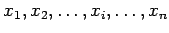 der Gleichung f'(x) = 0 bestimmt und jede von ihnen, z.B. 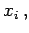 mit einer der folgenden Methoden untersucht.
- 2. Methode des Vorzeichenvergleichs:
- Für je einen Wert x- bzw. 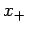, der etwas kleiner bzw. etwas größer als xi ist, wird das Vorzeichen der Ableitung f'(x) festgestellt, wobei zwischen xi und x- bzw. x+ keine weiteren Nullstellen von f'(x) liegen dürfen. Wenn beim Übergang von f'(x-) zu f'(x+) das Vorzeichen von f'(x) von ,,+`` nach ,,-`` wechselt, dann befindet sich bei x = xi ein relatives Maximum der Funktion f(x) (linke Abbildung); wechselt es umgekehrt von ,,-`` nach ,,+``, dann liegt ein relatives Minimum vor (rechte Abbildung).
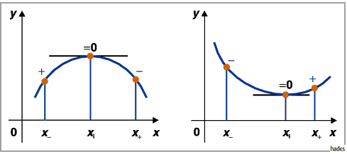
Gibt es keinen Vorzeichenwechsel der Ableitung (folgende linke und rechte Abbildung), dann besitzt die Kurve bei x = xi kein Extremum, sondern einen Wendepunkt mit einer zur x-Achse parallelen Tangente.
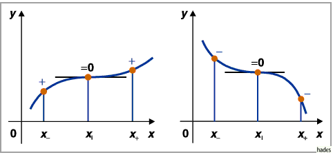
- 3. Methode der höheren Ableitungen:
- Besitzt die Funktion an der Stelle x = xi höhere Ableitungen, dann wird jede Wurzel xi in die zweite Ableitung f''(x) eingesetzt. Ist 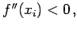 dann gibt es an der Stelle xi ein relatives Maximum, ist 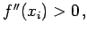 ein relatives Minimum, ist 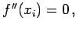 dann wird xi in die dritte Ableitung f'''(x) eingesetzt. Ergibt sich dabei 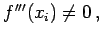 dann gibt es bei x = xi kein Extremum, sondern einen Wendepunkt. Erhält man 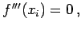 dann ist in die vierte Ableitung einzusetzen usw.
- 4. Bedingungen für Extremwerte und Wendepunkte:
- Ist die Ordnung der Ableitung, die an der Stelle x = xi erstmalig nicht verschwindet, gerade, dann besitzt f(x) dort ein relatives Extremum: für einen negativen Wert ein relatives Maximum, für einen positiven ein relatives Minimum. Ist die Ordnung dieser Ableitung ungerade, dann besitzt die Funktion an dieser Stelle keinen Extremwert, sondern einen Wendepunkt.
Die Methode des Vorzeichenvergleichs kann auch bei nichtexistierender Ableitung wie in den drei folgenden Abbildungen eingesetzt werden.
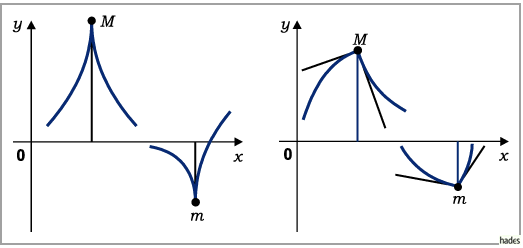
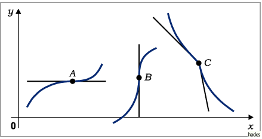
Hinweis: Die Bestimmung der Extremwerte von nichtstetigen, manchmal auch von gewissen differenzierbaren Funktionen erfodert eine besondere Herangehensweise. Es kann vorkommen, daß eine Funktion ein Extremum besitzt, so daß ihre erste Ableitung existiert und gleich Null ist, während die zweite Ableitung nicht existiert, oder, daß die erste Ableitung unendlich viele Wurzeln in einer beliebig kleinen Umgebung des betrachteten Punktes besitzt, so daß es sinnlos ist, davon zu sprechen sie würde ihr Vorzeichen ändern. Ein Beispiel ist die Funktion 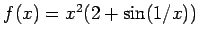 für 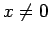 und f(0)=0.